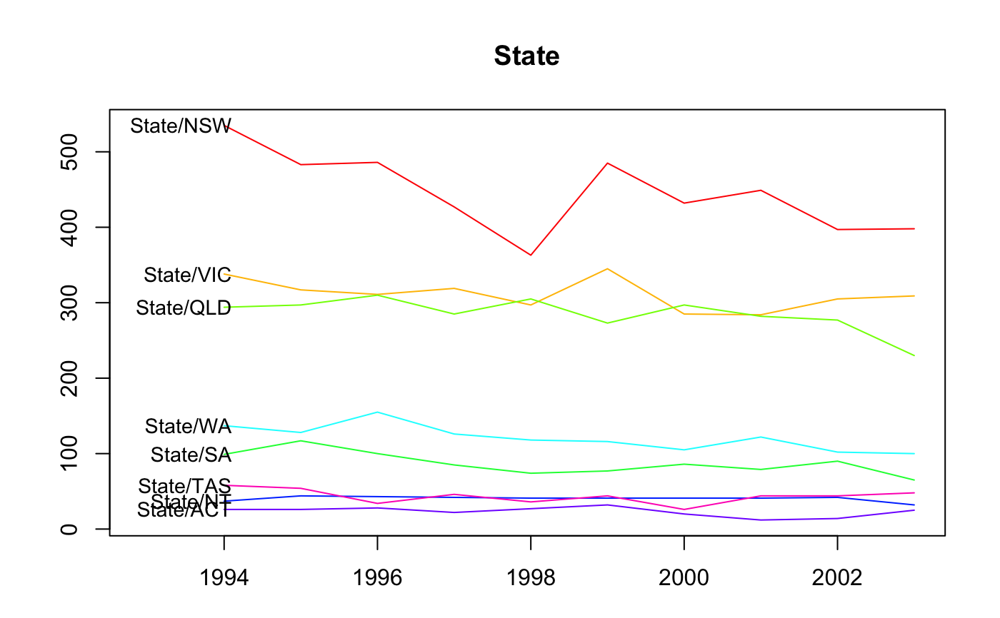
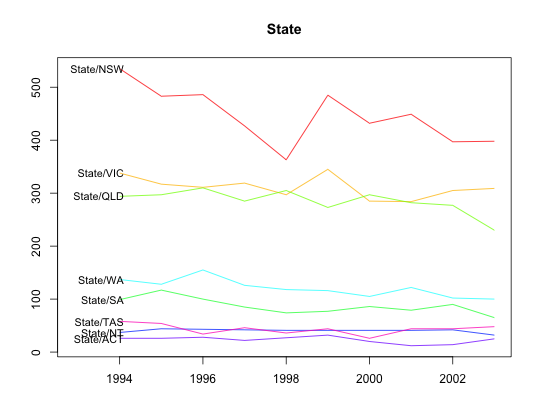
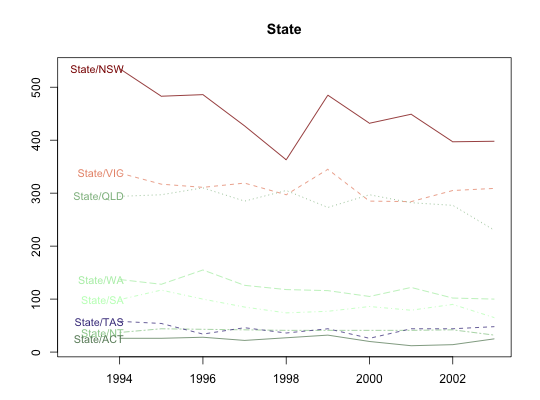

Method for plotting grouped or hierarchical time series and their forecasts.
# S3 method for gts plot(x, include, levels, labels = TRUE, col = NULL, color_lab = FALSE, ...)
| x | An object of class |
|---|---|
| include | Number of values from historical time series to include in the plot of forecasted group/hierarchical time series. |
| levels | Integer(s) or string(s) giving the specified levels(s) to be plotted |
| labels | If |
| col | Vector of colours, passed to |
| color_lab | If |
| … | Other arguments passing to |
R. J. Hyndman, R. A. Ahmed, G. Athanasopoulos and H.L. Shang (2011) Optimal combination forecasts for hierarchical time series. Computational Statistics and Data Analysis, 55(9), 2579--2589. http://robjhyndman.com/papers/hierarchical/
plot(htseg1, levels = c(0, 2))plot(infantgts, include = 10, levels = "State")plot(infantgts, include = 10, levels = "State", col = colours()[100:107], lty = 1:8, color_lab = TRUE)